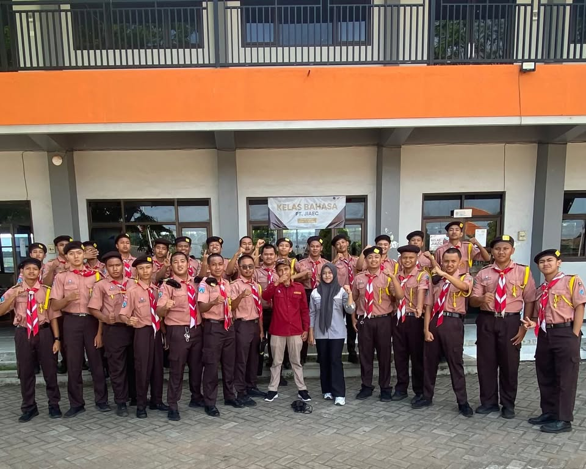

Wakil Ketua Pramuka

Menjadi Wakil Ketua Pramuka periode 2025-2026 adalah salah satu pengalaman paling berharga yang mengajarkan saya tentang leadership, tanggung jawab, dan kerja sama tim.
Jabatan & Tanggung Jawab
Sebagai Wakil Ketua, saya bertanggung jawab membantu Ketua dalam mengoordinasi seluruh kegiatan Pramuka di sekolah. Saya juga memimpin beberapa kegiatan penting yang menjadi bagian dari program kerja ambalan.
Kegiatan yang Saya Pimpin
🎯 Penerimaan Tamu Ambalan 2025
Sebagai Wakil Ketua Pelaksana, saya mengoordinasi seluruh rangkaian acara penyambutan anggota baru, mulai dari perencanaan, pembagian tugas, hingga evaluasi akhir.
🎯 Diklat Pasus Pramuka 2025
Dipercaya sebagai Ketua Pelaksana, saya memimpin kegiatan pendidikan dan pelatihan khusus untuk anggota Pramuka. Ini pengalaman pertama saya memimpin kegiatan besar dari awal hingga akhir.
🎯 Bantara Umum 2026
Berperan sebagai Sekretaris dalam kegiatan Bantara Umum. Saya belajar administrasi, mengelola surat-menyurat, dan membuat laporan kegiatan.
🎯 MC Bukber Angkatan 1-8
Menjadi MC di acara buka bersama lintas angkatan. Melatih kemampuan public speaking dan mengelola acara besar dengan banyak peserta.
Dokumentasi

Pencapaian
Pada tahun 2025, saya mengikuti seleksi PASGA (Pramuka Garuda) — tingkatan tertinggi dalam Pramuka. Ini pencapaian yang membanggakan karena hanya anggota terpilih yang bisa mengikutinya.
Pelajaran Berharga
- Leadership — Belajar memimpin dan mengambil keputusan
- Manajemen waktu — Menyeimbangkan akademik, organisasi, dan kegiatan pribadi
- Komunikasi — Berkoordinasi dengan banyak orang dari berbagai angkatan
- Tanggung jawab — Menyelesaikan setiap amanah yang diberikan
Kesimpulan
Pramuka mengajarkan saya bahwa leadership bukan tentang memerintah, tapi tentang melayani dan menginspirasi. Pengalaman ini membentuk karakter saya untuk menjadi pribadi yang lebih disiplin, bertanggung jawab, dan siap berkontribusi.